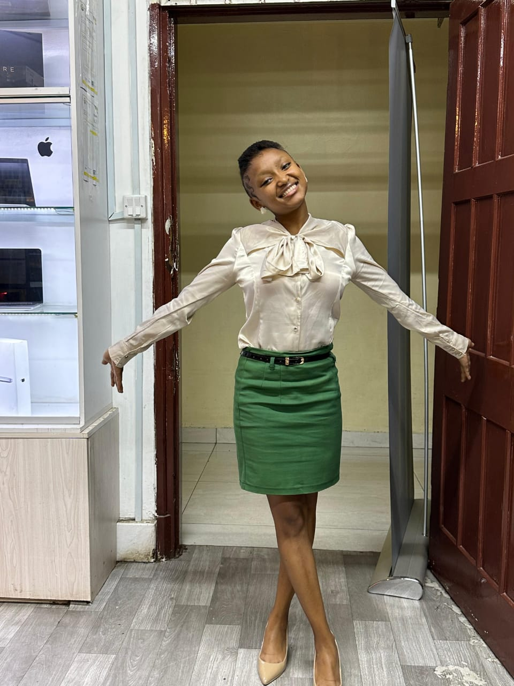

I am Eva,
a Web Developer

Welcome to my Web Developer Portfolio! Eva W.N, passionate about creativity, technology, and problem-solving. This space showcases my skills, projects, and journey in the digital world. Take a look around, get inspired, and let’s build something amazing together!